|
CONSTRUCCIÓN DE BATERÍA
DE TERRARIOS. ALOJAMIENTO EXTERIOR.
Mariano Orantes, 2007
Aprovechando la época de trasladar a las
tortugas a los alojamientos de interior, me planteo remodelar mis
viejas instalaciones exteriores que con el paso del tiempo y la
experiencia adquirida, han demostrado ser poco adecuadas para la cría.
Estas instalaciones, consistentes en una estructura metálica con
varias filas de estantes y cubiertas de tela metálica, no resultaban
ser las más apropiadas, ya que en época estival alcanzaban altas
temperaturas y en otras épocas o con la llegada de la noche no
aislaban de la bajada de temperatura. Aparte de esto, la poca
profundidad de sustrato que admitían, impedía la conducta natural de
las tortugas, dificultando la realización de puestas; actividades como
excavar, refugiarse, estivar, hibernar… se hacían prácticamente
imposibles, con el consiguiente estrés que provocaba.
Por todo esto, llevaba tiempo planteándome el construir unos nuevos
recintos que dieran la posibilidad a mis animales de desarrollar un
comportamiento más natural.
Para los que estamos limitados por el espacio disponible, creo que la
mejor opción es construir los terrarios en batería.
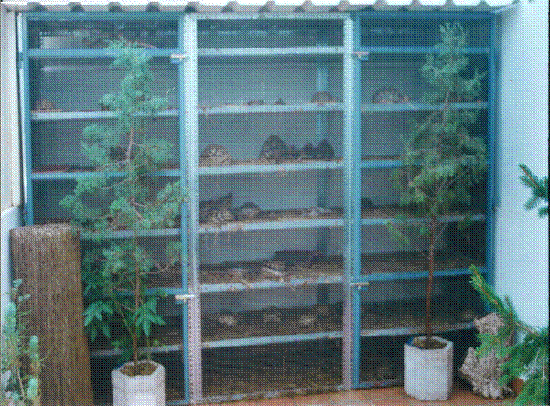
Antiguas instalaciones.
Con la idea de aprovechar al máximo la altura disponible, me planteé
construir cinco niveles con una altura de 40cm entre uno y otro, dando
a la instalación un máximo de altura de dos metros.
Otro objetivo importante era dotar a los terrarios de profundidad
suficiente para el sustrato, por lo que del espacio libre entre un
nivel y otro, decidí dejar 15cm para llenarlos de sustrato, que es el
mínimo para que las tortugas puedan excavar sin dificultad a la hora
de realizar las puestas.
El sustrato a utilizar sería mantillo. Me decidí por éste por su poco
peso, retención de humedad, aspecto natural, fácil disponibilidad y
precio; en este caso, gratis, ya que por mi trabajo puedo acceder a
este material que obtenemos de reciclar los restos de poda.
El volumen de sustrato a emplear rondará los 2 m3.
Para darle un aspecto más natural y agradable a la instalación, busqué
plaquetas de piedra artificial para la decoración del fondo y los
laterales; que a su vez facilitará su limpieza.
Con respecto al uso de comederos y bebederos, tras calentarme un
tiempo la cabeza, he optado por utilizar canalón de PVC de 125 mm. Ø,
que cortado a medida y utilizando en los extremos tapas con junta de
goma, hacen impermeable el conjunto con lo que pueden ser utilizados
como bebederos sin ningún problema. Al tener unas medidas reducidas
impiden que los animales accedan al interior, evitando que pisoteen y
llenen de excrementos tanto los utilizados como comederos como los
bebederos. Además de que es un material ligero, resistente y fácil de
limpiar, ocupan poco espacio en el terrario, pero al tener un metro de
longitud permite que todos los animales puedan acceder a ellos con
facilidad.
A mediados de Octubre, no lo pensé más y comencé con los trabajos.
Lo primero fue desmontar las viejas instalaciones.
Una vez desmontada la vieja estructura, el espacio disponible era de
unos tres metros de longitud y un metro de fondo, lo que me permitía
construir terrarios con una superficie de 3 m ², suficiente para
albergar grupos reproductores de 4-6 animales.
Para adaptar el espacio a las medidas proyectadas, retiré el rodapié y
recrecí el muro del fondo. A su vez pique la pared para facilitar el
agarre del aplacado.
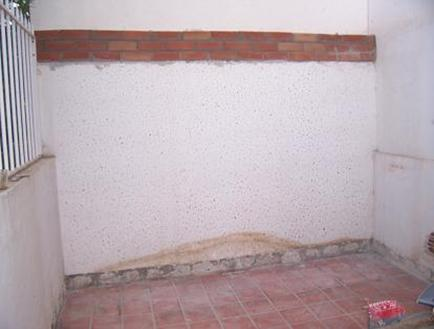
Una vez replanteado el espacio comencé con el proceso de construcción:
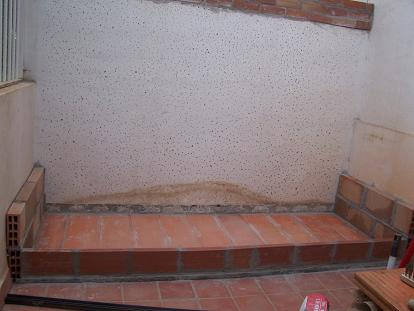
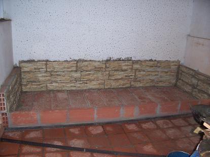
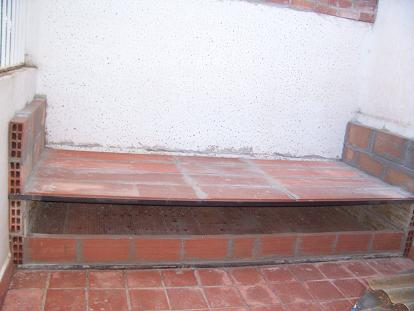
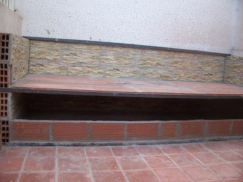
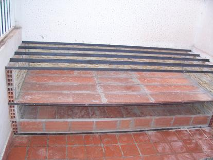
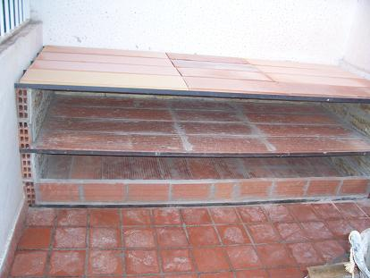
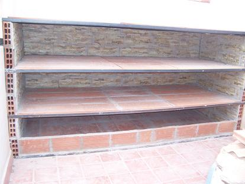
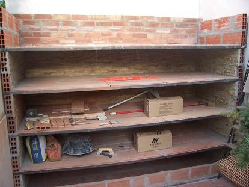
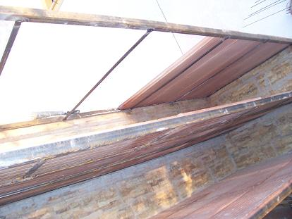
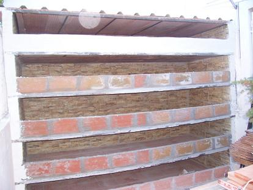
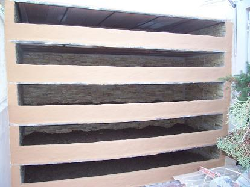
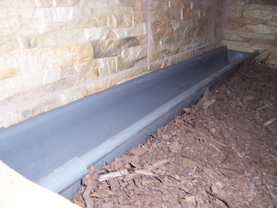
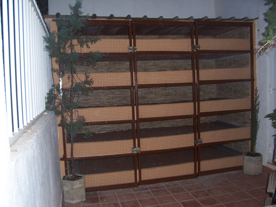
Nuevas instalaciones una vez terminadas.
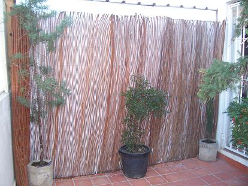
Cierre con planchas de porexpan para protección contra las bajas
temperaturas.
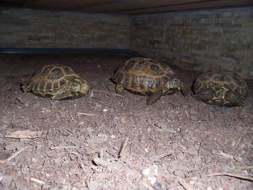
Grupo reproductor de Agrionemys horsfieldii.
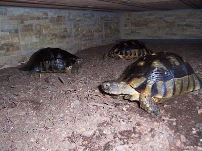
Grupo de Testudo marginata adultas.
Presupuesto de ejecución material.
1.- Estructura y Cubierta.
- Ángulo liso 30 X 30 X 3,0 (6 m.)………………….36 ud……………..210.00 €
- Chapa trapezoidal 250 X 105……………………….2 ud………….……72.80 €
2.- Albañilería y Revestimientos.
- Rasilla Machihembrada 100 X 25 X 4……..………70 ud………………65.80 €
- Ladrillo hueco doble 40 X 20 X 7………………….50 ud………………12.00 €
- Ladrillo hueco sencillo 30 X 15 X 4……………….60 ud………………..9.00 €
- Ladrillo hueco doble 24 X 10 X 7………………….48 ud……………….3.98 €
- Mortero gris 25 kg…………………………………..6 ud………………12.36 €
- Mortero blanco 25 Kg………………………………4 ud………………11.20 €
- Cemento Cola 25 kg………………………………..6 ud…………….…12.60 €
3.- Alicatados.
- M2 Plaqueta Piedra Artificial 45 X 15………….….9 ud……….……135.00 €
4.- Carpintería Metálica.
- Tubo rectangular 30 X 20 X 1,5 (6m.)..……….24 ud……………….28.80 €
- Pletina 20 X 4 (6m)……………………………..24 ud……………….30.00 €
- Cerrojos…………………………………………..4 ud………………...7.51 €
- Bisagras 80 X 12 X 2…………………………….8 ud……………...…1.83 €
- Mt. Tela metálica electrosoldada………..………7 ud………………..21.60 €
- Candado llave única……………………………..4 ud………………..11.10 €
5.- Pinturas.
- Pintura Pétrea liso 5 kg…………………………1 ud…………………15.75 €
- Pintura de Imprimación antioxido 1Kg……...…1 ud…………………..6.90 €
- Pintura Esmalte 1 kg……………………………1 ud………………….7.50 €
6.- Varios.
- M3 Sustrato Mantillo…………………………..2 ud……………..………..0 €
- Mt. de Canalón PVC 125Ø Gris………………10 ud…………………24.00 €
- Tapas Canalón PVC 125Ø Gris………………20 ud…………………17.00 €
- M2 Plancha de porexpan (4cm)…………………6 ud…………………10.20 €
7.- Mano de Obra.
- Coste……………………………………………………………………….0 €
Coste Total de Ejecución……………………………………………………726.93 €
Tiempo estimado de Ejecución: Mes y medio, aprovechando sólo
los fines de semana y alguna horilla extra entre semana.
Secuelas físicas y mentales:
- Contusión hombro y brazo izquierdo por sobreesfuerzo.
- Caída en altura al partirse un machihembrado .
- Corte en un pie al caer un ladrillo (no usaba calzado de seguridad).
- Inhalación de polvo ambiental.
- Fatiga postural. Lumbalgia.
- Agujetas y Calambres.
- Quemaduras usando la radial y la soldadora.
- Amenazas antisociales (por parte de la parienta).
- Ansiedad (por terminar).
- Cefaleas, migrañas, insomnio…(planificación y preparativos).
- Éxtasis (al ver los resultados).
Daños:
- 2 pijamas quemados por las chispas de la radial y la soldadora.
- Ropa llena de pintura.
- 1 cortina destrozada al engancharse con una de las puertas
metálicas.
- 1 radiocasete averiado al entrarle polvo.
- Suelos y paredes llenas de pintura, cemento, quemaduras…
- Puertas arañadas.
Al final los daños materiales se arreglan, los físicos y mentales con
un periodo de reposo también.
Si al final os decidís, que quede constancia de que os he advertido.
|